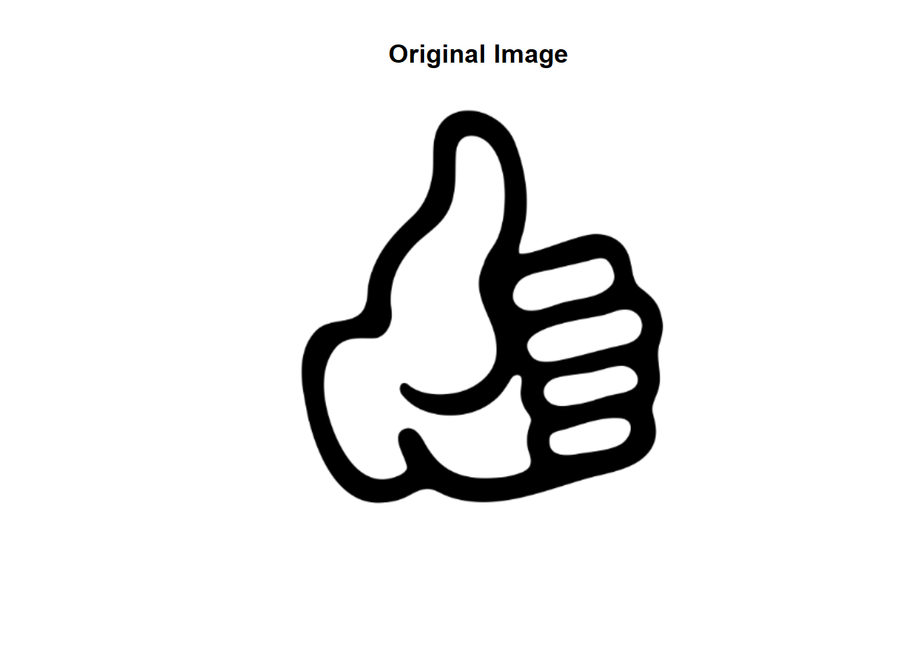

library(imager)
library(ggplot2)
# Load the image
img_path <- 'thumbsup.png'
original_img <- load.image(img_path)
# Convert to grayscale if needed
# Check channels (dim[3]), not depth (dim[4])
if(dim(original_img)[3] == 3) {
original_img <- grayscale(original_img)
}
# Display the original image
plot(original_img, axes = FALSE, main = "Original Image")
cat("Image dimensions:", dim(original_img)[1], "x", dim(original_img)[2], "pixels\n")Image dimensions: 366 x 378 pixels